수업 영상이 배경으로 반복 재생됩니다 — 강사가 재료를 나누어 주는 장면.
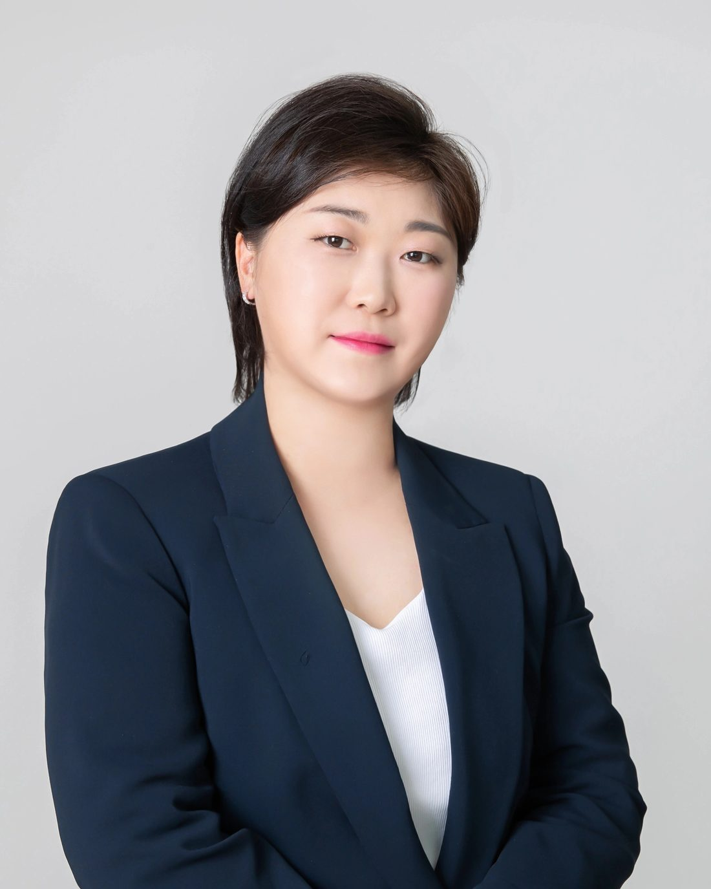
강지은
율이공방 대표 · 제주공예문화협회 회장 · PBS컬러랩 제주센터장
“어렵지 않게,
그러나 끝까지.”
치위생을 전공하고, 아이를 키우며 ‘안심하고 쓸 수 있는 것’을 직접 만들기 시작했습니다. 그 관심이 천연화장품과 비누로, 다시 아로마와 컬러테라피로 이어져 2021년 율이공방을 열었습니다.
지금까지 초등학교 돌봄교실부터 대학 신중년 과정까지, 복지관과 공공기관을 오가며 강의해왔습니다. 어르신도, 장애가 있는 분도, 손재주가 없다고 하시는 분도 끝까지 완성하시는 걸 보면서 “어렵지 않게, 그러나 끝까지”가 제 수업의 원칙이 되었습니다.
대표 이력
- 제주특별자치도교육청 생태환경교육 민간위탁 20회차 운영 (2024)
- 한국폴리텍대학 울산캠퍼스 외래교수 — 신중년 특화과정 (2025)
- 초등 돌봄교실 연간 정기 출강 40주 완주 (2024~2025)
소속 · 직책
공방 운영에만 머무르지 않고, 공예·컬러 두 분야의 단체를 함께 이끌고 있습니다.
| 소속 | 직책 | 맡고 있는 일 |
|---|---|---|
| 율이공방 | 대표 | 아로마 조향 · MBTI 향수 · 천연제품(비누·화장품·롤온) 클래스, 업사이클링 공예 기반 환경교육 체험 수업 운영 |
| 제주공예문화협회 | 회장 | 환경교육(자원순환) 공예, 업사이클 공예, 아로마테라피 |
| PBS컬러랩 | 제주센터장 | 컬러 강점, 컬러테라피, 휴먼컬러, 컬러 아로마 교육 (2023.3~현재) |
서귀중앙초 학부모회 교육봉사 2회(60명) · 동아리 재능기부 10회(회당 10명 내외, 누적 약 100명)
보유 자격 · 수료 33종
- 필크라이스트 아로마 조향사 — 국제아로마테라피협회(IAA)
- Perfumery 1 & 2 — 원포유향장진흥협회
- 인센스 향 지도사 (사범) — 한국양초공예협회(KCCA)
- 인센스 수료
- P.O.MBTI Class 수료 — 한국양초공예협회(KCCA)
- MBTI 조향 수료
- 아로마강사 1급 — 국제아로마테라피협회(IAA)
- 아로마강사 2급 — 국제아로마테라피협회(IAA)
- 아로마캔들 지도사 — 국제아로마디자인센터(ICAD)
- 디자인 캔들 지도사
- Color Practitioner Course — JCLTA 한국지부 / (사)한국색채심리치료협회
- 휴먼컬러 전문가
- 휴먼컬러 심화 컨설턴트
- 컬러넘버 수비학 전문가
- 컬러강점 전문가 2급
- 색채학(K776) 수료
- 환경교육사 3급 — 기후에너지환경부 (국가자격)
- 탄소중립전문가 2급 — 에듀블록플랫폼(주)
- 제로웨이스트 전문강사 — 국제아로마테라피협회(IAA)
- 스칸디아모스 1급
환경교육사 3급은 국가자격입니다. 공공기관 환경·탄소중립 사업 참여 시 자격 요건을 충족합니다.
- 천연비누강사 1급 · 2급 — 국제아로마테라피협회(IAA)
- 화장품강사 1급 · 2급 — 국제아로마테라피협회(IAA)
- 발효화장품 전문강사 · 모발화장품 전문강사
- 디자인비누 전문강사 · 노케미라이프 전문강사
- 루미너스 솝 · 샤이니 솝 · MP 솝
- 버블마스터 · 버블클레이
제주공예문화협회 회장 · PBS컬러랩 제주센터장으로 강사 양성과 팀 운영을 함께 맡고 있습니다.
출강 기관
- 서귀중앙초등학교
- 중앙초등학교
- 서귀포 토평초등학교
- 도순초등학교
- 조천초등학교
- 인화초등학교
- 한마음초등학교
- 대신중학교
- 중문중학교
- 남주중학교
- 청운중학교
- 월평중학교
- 제주중앙중학교
- 제주사범대학교 부설중학교
- 성산고등학교
- 중문고등학교
- 제주여자고등학교
- 제주외국어고등학교
- 한국뷰티고등학교
- 한국폴리텍대학 울산캠퍼스
- 제주특별자치도교육청
- 탐라교육원 (교육청 연수기관)
- 충남지속발전협의회
- 제주시정신건강복지센터
- 서귀포 서부보건소
- 서귀포 공무원연금공단
- 울산 남구 세무공무원
- 남목청소년문화의집
- 서귀포장애인종합복지관
- 서귀포노인복지관
- 하늘빛 복지타운
- 제주공예문화협회 · PBS컬러랩 제주센터
기업 — 제주호텔 브릿지 (시그니처 향 기획·개발). 기업 워크숍 · 창립행사 기념품 제작도 진행합니다.
조향 · 컬러테라피 · 환경수업 · 관광기념품
공공기관 직원연수, 교사연수, 학교와 단체까지 — 대상과 계절, 예산에 맞춰 매번 다르게 설계합니다.
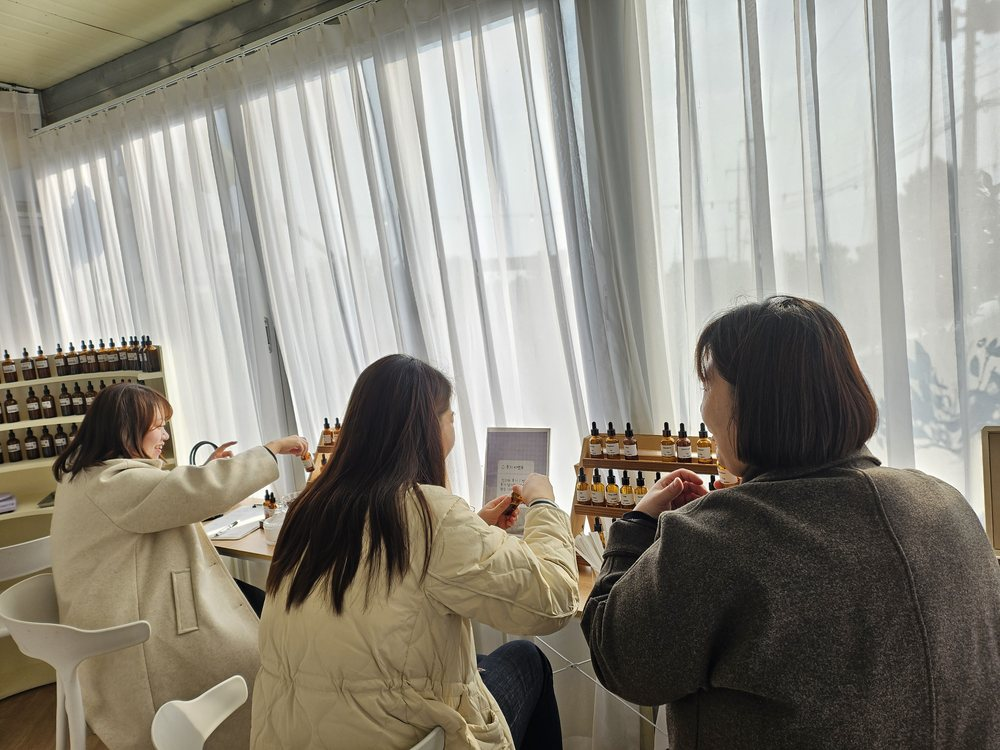
향으로 멈추기
시향하고, 고르고, 섞는 사이에 생각이 조용해집니다. 나만의 향 한 병을 들고 돌아갑니다.
조향 프로그램 보기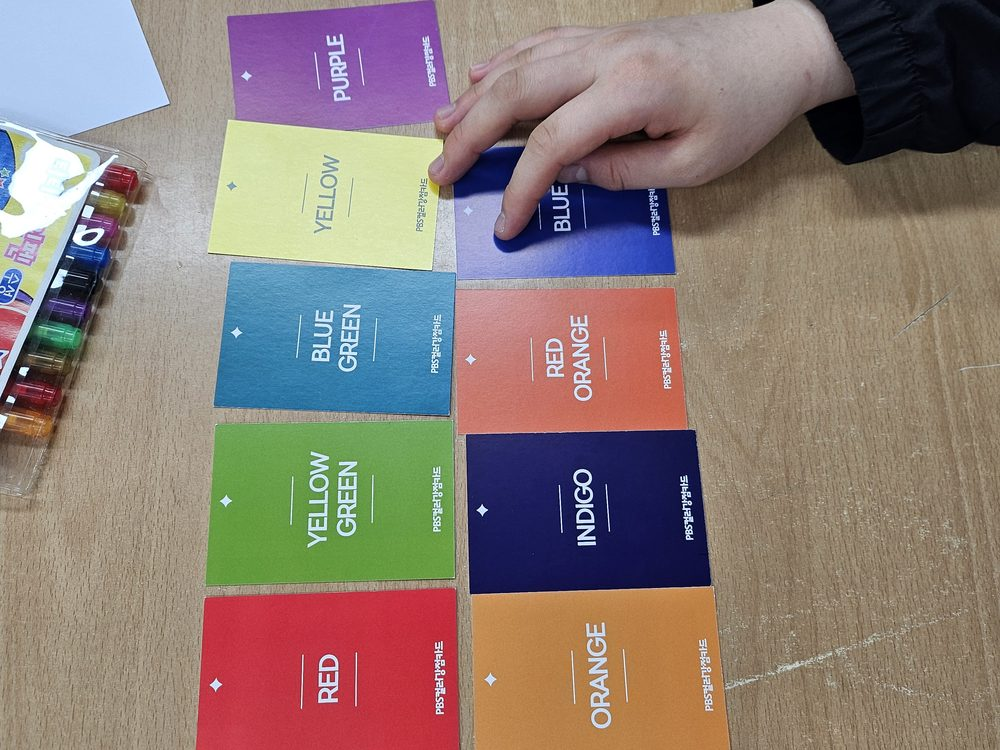
색으로 나를 읽기
오늘 끌리는 색이 지금의 나를 말해줍니다. 색으로 마음을 읽고, 색으로 하나 만듭니다.
컬러테라피 프로그램 보기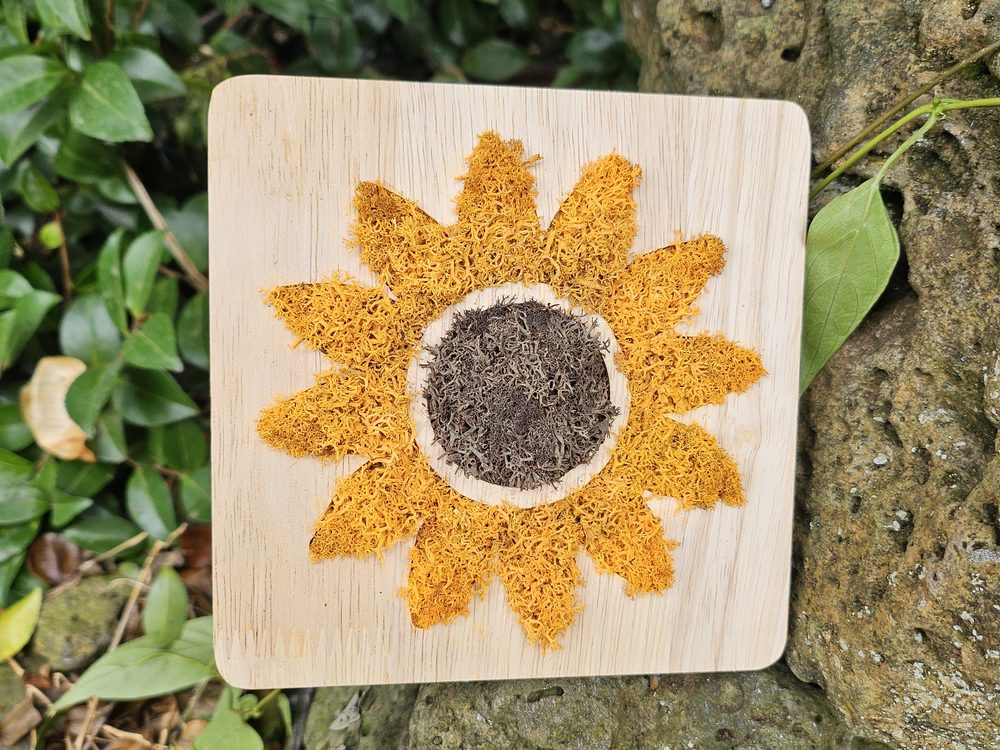
자연으로 돌아보기
내 손으로 만든 것 하나가 쓰레기 하나를 줄입니다. 배우고 실천하고, 가져갑니다.
환경수업 프로그램 보기
제주를 담아 선물하기
제주의 색과 향을 담은 향수·디퓨저를 만듭니다. 관광 상품으로, 기관 기념품으로 그대로 쓰실 수 있습니다.
관광기념품 보기대상별 프로그램
| 참여 대상 | 먼저 권해드리는 프로그램 | 이유 |
|---|---|---|
| 어르신 (65세 이상) | 아로마 롤온 · 컬러 심리 스칸디아모스 | 손에 힘이 덜 들어가고, 앉은 자리에서 끝납니다. 소근육 운동을 겸합니다 |
| 장애가 있는 분 | 아로마 롤온 · 천연비누 | 공정이 단순해 실패가 없습니다. 서귀포장애인종합복지관 정기 출강 경험 |
| 기업 임직원 | 나만의 시그니처 향수 · MBTI 향수 | 회의실에서 90분이면 됩니다. 아이스브레이킹을 겸합니다 |
| 감정노동 직군 | 컬러테라피 & 아로마 감정힐링 | 자기돌봄을 주제로 설계합니다. 콜센터·민원부서·돌봄 종사자 대상 |
| 초 · 중 · 고 학생 | 업사이클 공예 · MBTI 향수 진로체험 | 환경 실천과 직업 체험으로 이어집니다. 교육청 위탁 20회차 운영 |
| 학부모 · 가족 | 천연 썬로션 · 천연비누 | 집에서 실제로 쓰는 물건이 남습니다. 학부모 참여 프로그램에서 반응이 좋습니다 |
| 공공 예산 사업 | 환경수업 전 과정 | 환경교육사 3급·탄소중립전문가 2급 보유. 사업비·건강증진 예산으로 집행 가능합니다 |
커리큘럼 · 90분 진행 구성
| 시간 | 단계 | 내용 |
|---|---|---|
| -30분 | 사전 세팅 | 강사 도착, 자리 배치 및 재료 세팅 (수업 시간에 포함되지 않습니다) |
| 10분 | 도입 | 인사, 오늘 만들 것 소개, 긴장 풀기 |
| 20분 | 이야기 | 향 · 색 · 환경 주제 이야기. 강의가 아니라 대화에 가깝게 |
| 45분 | 제작 | 고르고 섞고 만들기. 강사가 개별 속도에 맞춰 지원 |
| 15분 | 마무리 | 완성품 감상, 소감 나눔, 포장 |
| +20분 | 정리 | 강사가 현장 정리 및 폐기물 수거 (담당자 관여 불필요) |
정기 과정 (연간 · 회차 운영)
서귀포 토평초등학교 돌봄교실에서 2024년 4월부터 2025년 2월까지, 40주를 함께했습니다. 매주 다른 주제로, 계절과 명절에 맞춰, 한 번도 겹치지 않게.
연간 커리큘럼이 이미 짜여 있어, 기관 사정에 맞춰 10회 · 20회 · 40회로 조정해 드립니다.
운영 형태 — 주 1회 정기 출강 / 회차별 결과물 제작 / 사전 협의 후 일정 조정
| 축 | 주차 | 해당 활동 |
|---|---|---|
| 조향 · 향 | 7주 | 동백꽃 비누 · 카네이션 캔들 · 왁스 타블렛 · 천연 모기밤 · 바다를 향과 색으로 표현 · 나만의 향수 · 크리스마스 젤캔들 |
| 컬러테라피 · 색 | 7주 | 컬러 에너지 백드롭 액자 · 오방색 단청 열쇠고리 · 마크라메 걱정인형 · 드림캐쳐 · 꿈 액자 · 별자리 액자 · 썬캐쳐 |
| 환경수업 · 자연 | 13주 | 업사이클 화분 · 스칸디아모스 화분·태극기·가족·단풍액자·크리스마스 리스 · 양말목 동백꽃 키링 · 천연 썬로션 · 샴푸바 · 커피박 키링 · 병뚜껑 키링 · 은행잎 책갈피 |
| 계절 · 문화 연계 | 13주 | 3축을 명절·계절 주제에 응용 — 카네이션 비누·비누꽃 / 가우디 모자이크 / 바다비누·젤캔들 / 송편비누·민화 압화병풍·달 위상액자 / 핸드로션·코스모스·할로윈 / 크리스마스 비누·스노우볼 / 새해달력·캘리갈란드·보름달비누·꽃신·저금통 / 용돈봉투·슈링클스·열두띠 |
협력 전문강사팀 운영
전문강사팀과 함께 운영합니다. 간호학·향장학·교육학·시각디자인·상담·사회복지 등 전공 배경이 다양하고, 석·박사 학위 소지자와 각 분야 센터 대표들이 포함되어 있습니다.
인원이 많아도 한 번에
인원이 많은 회차는 강사 2명 이상 투입이 기본입니다. 여러 반을 같은 날 동시에 진행하는 것도 가능합니다.
결원이 생겨도 일정 그대로
강사 결원 시 즉시 대체 투입이 가능합니다. 모든 투입 강사는 교육방법·안전·사고 대응 사전교육을 이수합니다.
| 전공 갈래 | 어떤 회차에 들어가나 |
|---|---|
| 교육학 (박사·석사 포함) · 상담 | 학교 수업, 교사연수, 진로·심리 프로그램 |
| 향장학 (석사) · 간호학 | 조향·아로마, 안전 관리가 중요한 실습 회차 |
| 시각디자인 · 산업디자인 · 관광 | 관광기념품 제작, 컬러·시각 작업 |
| 사회복지 · 경영 (석사 포함) · 치위생 | 공공기관 직원연수, 복지관·단체 프로그램 |
운영 목적에 따라 프로그램을 다르게 구성합니다.
| 상황 | 이렇게 제안합니다 |
|---|---|
| 직원 복지 · 힐링데이 | 업무 시간 중 90분. 회의실에서 진행 가능. 팀 단위로 나눠 여러 차수 운영 |
| 워크숍 · 팀빌딩 | 같은 향을 각자 다르게 조합하며 서로를 알아가는 구성. 아이스브레이킹 대체 |
| 감정노동 직군 회복 | 콜센터·민원부서·돌봄 종사자 대상. 자기돌봄 주제로 설계 |
| 복지관 정기 프로그램 | 주 1회 × 10회 등 연속 과정. 매회 결과물이 남아 출석률이 유지됨 |
| 보건소 건강증진 사업 | 스트레스 관리·정신건강 사업과 연계. 환경교육사·탄소중립 자격 보유 |
| 학교 진로 · 환경교육 | 조향사 직업체험, 제로웨이스트 실천 수업. 교육청 위탁 20회차 운영 경험 |
| 기념일 · 창립행사 | 참여자 전원에게 남는 기념품형 결과물. 로고·문구 라벨 제작 가능 |
모든 출강에 공통으로 적용하는 네 가지 기준입니다.
배우기만 하는 수업이 아니고, 참여하는 체험수업입니다
손재주 상관없이 모두 완성할 수 있게 해드립니다
정해진 시간 안에 모두 완성할 수 있도록 진행합니다
현장 마무리 정리까지 완벽합니다
율이공방의 수업 차별점
| 율이공방 | |
|---|---|
| 목적 | 쉼과 회복의 시간 설계 |
| 난이도 | 초보자 기준 설계 · 전원 완성 |
| 뒷정리 | 강사가 세팅부터 정리까지 |
| 강사 결원 | 협력 전문강사팀 · 즉시 대체 |
| 사후 자료 | 현장 사진 · 만족도 결과 공유 (담당자 보고용) |
사후 자료 공유는 제주도교육청 위탁사업에서 실제로 운영한 방식입니다 — 당일 현장 사진 공유 + 모바일 만족도 설문.
기관 유형별 진행 사례입니다.
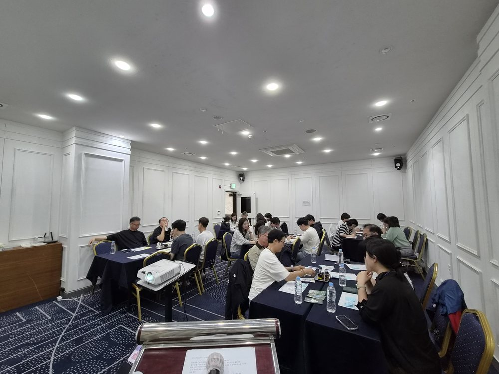
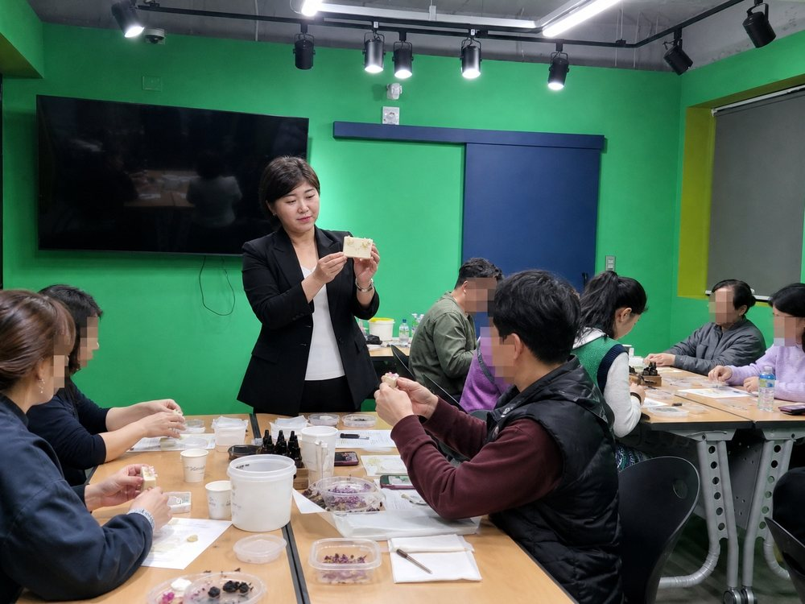
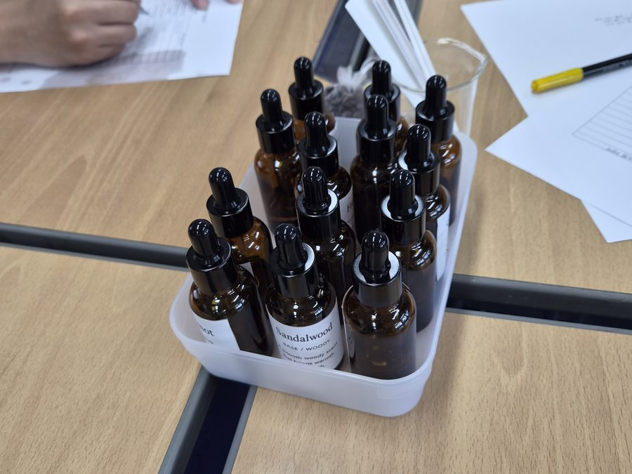

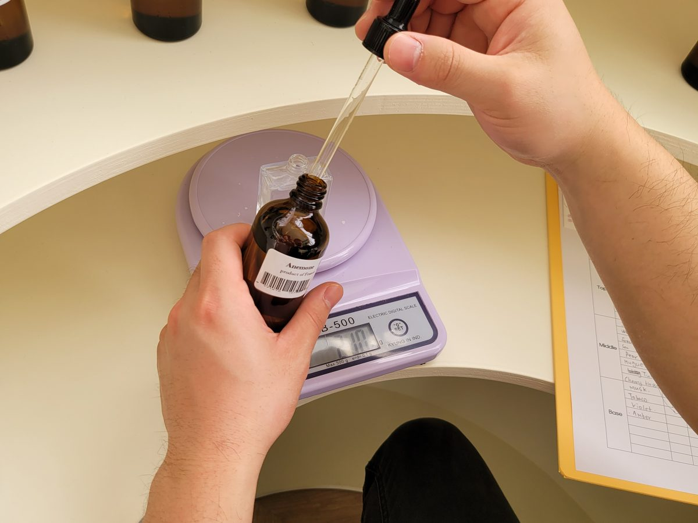

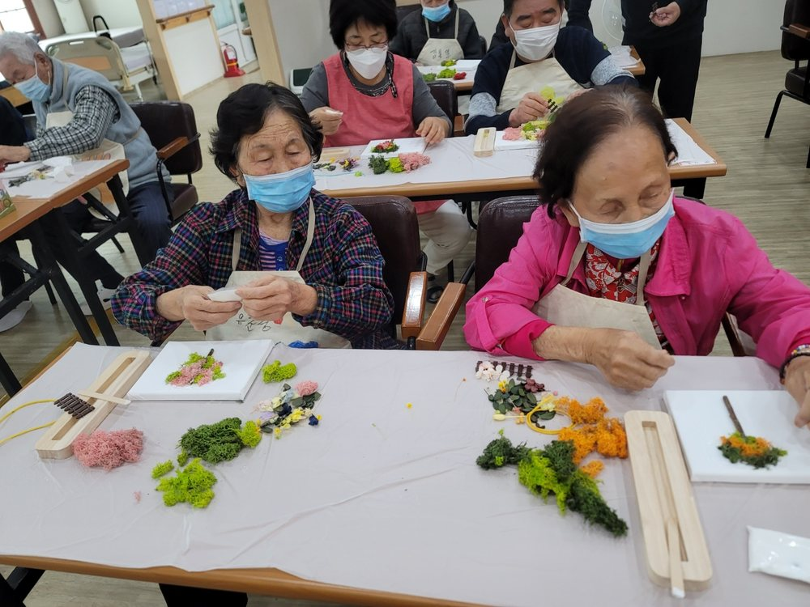
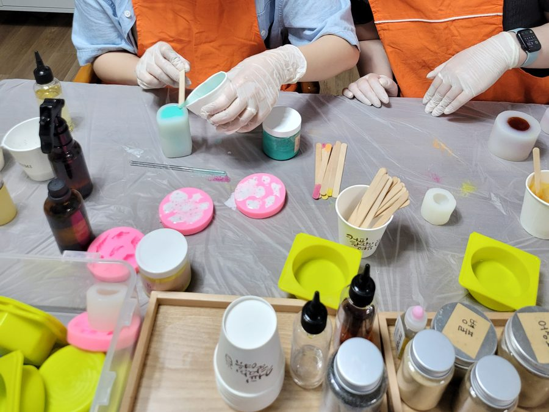

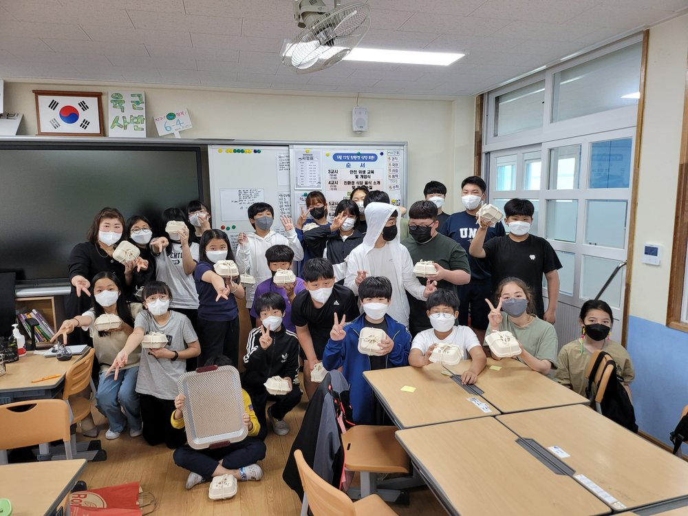
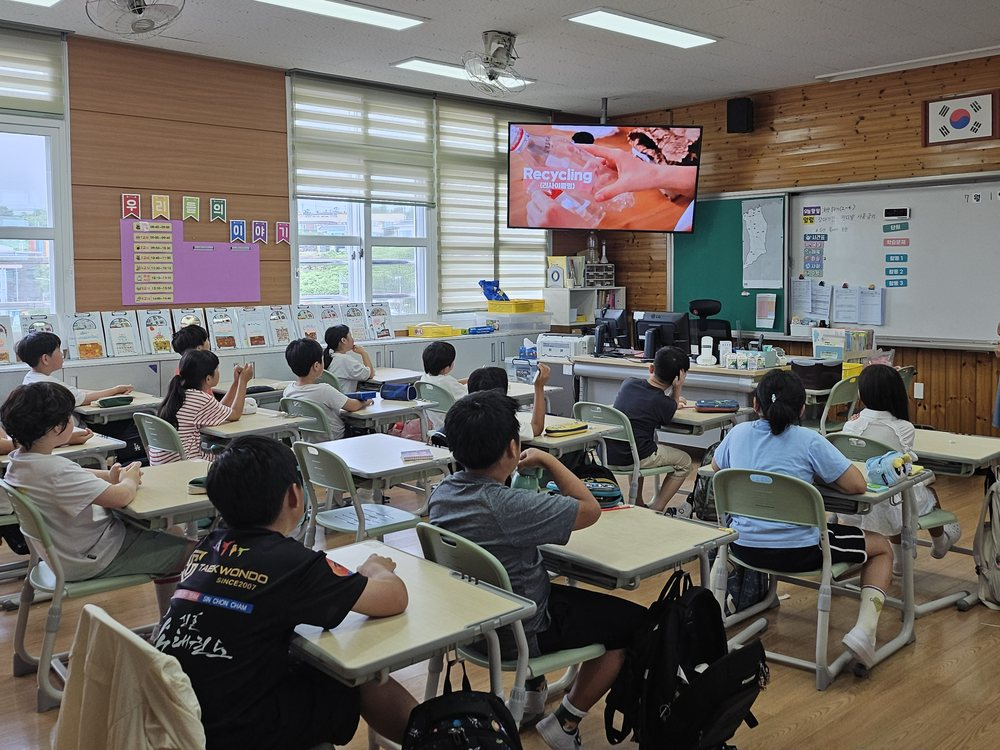
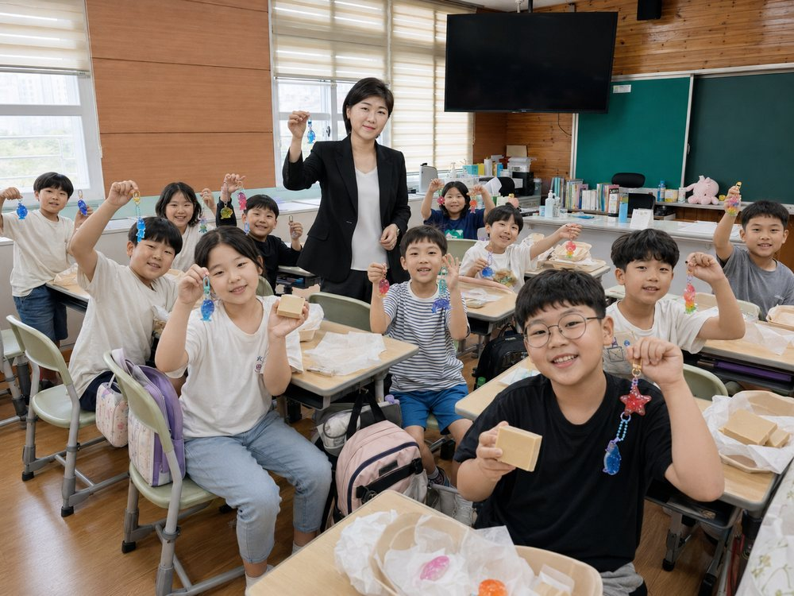
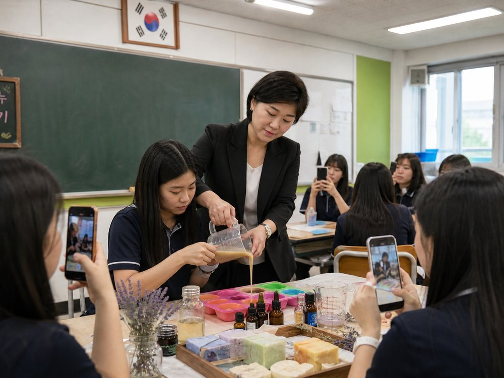
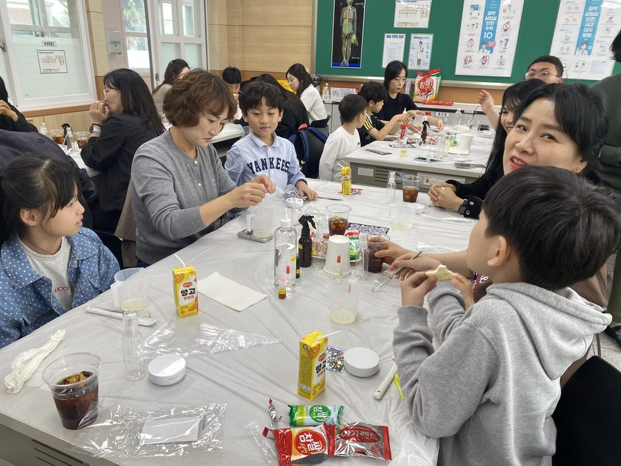
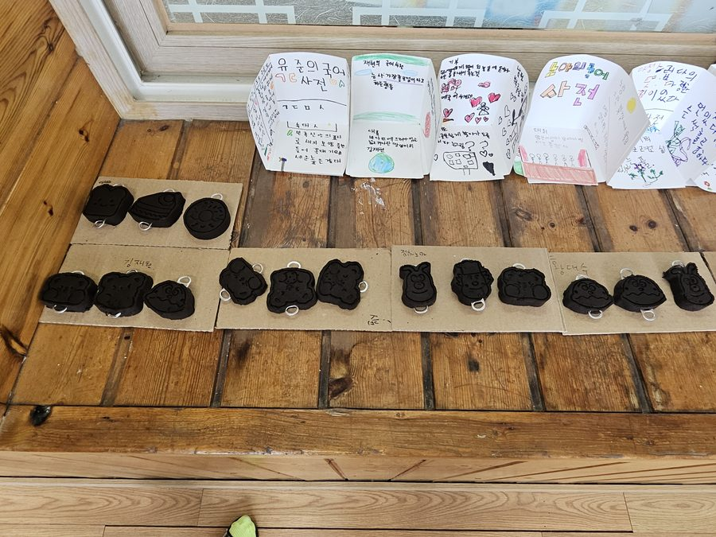
참가자 후기
준비할 게 없어서 담당자로서 편했습니다. 재료부터 뒷정리까지 강사님이 다 하시고, 저는 공간만 열어드렸어요. 직원들 표정이 끝나고 달라져 있었습니다.
○○복지관 담당자 · 2026년 5월
손재주가 없어서 걱정했는데 끝까지 다 만들었습니다. 향을 고르는 동안 아무 생각이 안 나서, 오랜만에 쉬었다는 느낌이 들었어요.
직원 힐링데이 참여자 · 2026년 4월
아이들이 만든 걸 하루 종일 들고 다녔습니다. 환경 이야기를 잔소리처럼 들리지 않게 풀어주셔서 수업 뒤에도 이야기가 이어졌어요.
초등학교 담당 선생님 · 2025년 6월
정기 과정인데 결석이 거의 없었습니다. 매회 가져갈 결과물이 남으니 어르신들이 다음 시간을 기다리셨어요.
복지관 정기 프로그램 담당자 · 2025년 12월
진로체험 부스로 진행했는데 학생들이 줄을 섰습니다. 짧은 시간에 한 명씩 완성해서 돌려보내는 운영이 인상적이었어요.
중학교 진로 담당 · 2026년 7월
회의실에서 90분이면 끝난다는 점이 컸습니다. 업무 시간에 부담 없이 넣을 수 있어 다음 분기에도 요청드렸습니다.
공공기관 직원연수 담당 · 2026년 5월
담당자님이 실제로 물어보시는 순서대로 정리했습니다.
제주에서 기업·기관 출강 체험수업은 어디에 문의하나요?
최소 몇 명부터 출강이 가능한가요?
최대는 회차당 30명 내외가 만족도가 가장 높고, 그 이상은 반을 나누거나 강사를 추가 투입합니다.
어떤 공간이면 수업이 가능한가요?
있으면 좋은 것 — 전기 콘센트(캔들·왁스류), 수도(비누·세제류). 없어도 대체 방법으로 진행할 수 있으니 문의 시 공간 상황만 알려주세요.
만든 결과물은 바로 가져갈 수 있나요?
단 캔들·비누처럼 굳는 시간이 필요한 일부 품목은 수업 후 30분~1시간 정도 기다리거나, 다음 날 담당자님이 배부하시는 방식으로 안내드립니다. 프로그램 선택 시 미리 알려드립니다.
알레르기나 안전 문제는 없나요?
사전에 참여자 중 임신부·알레르기 이력이 있는 분이 계시면 알려주세요. 프로그램을 조정합니다.
수업 후 보고 자료를 받을 수 있나요?
사진 촬영은 참여자 사전 동의를 받은 경우에만 진행합니다.